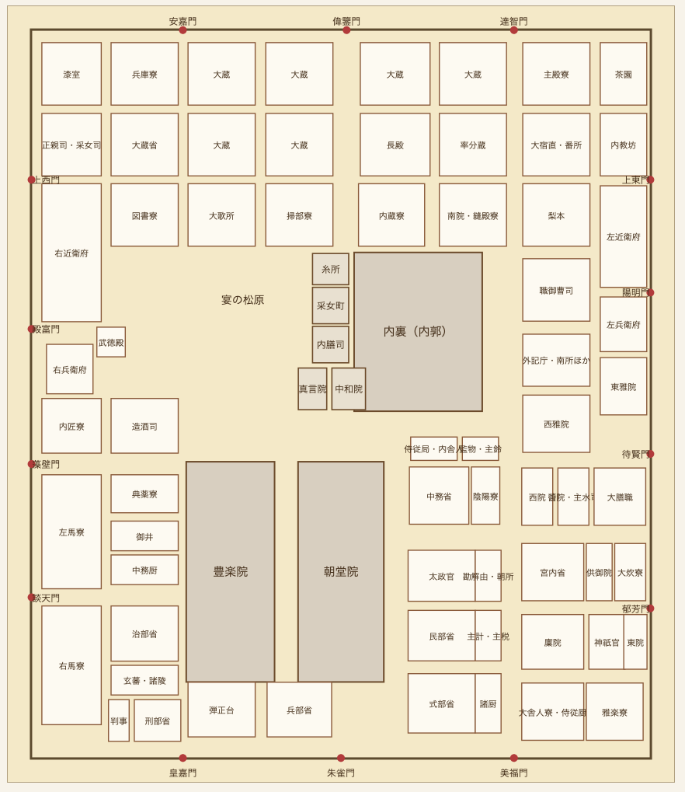
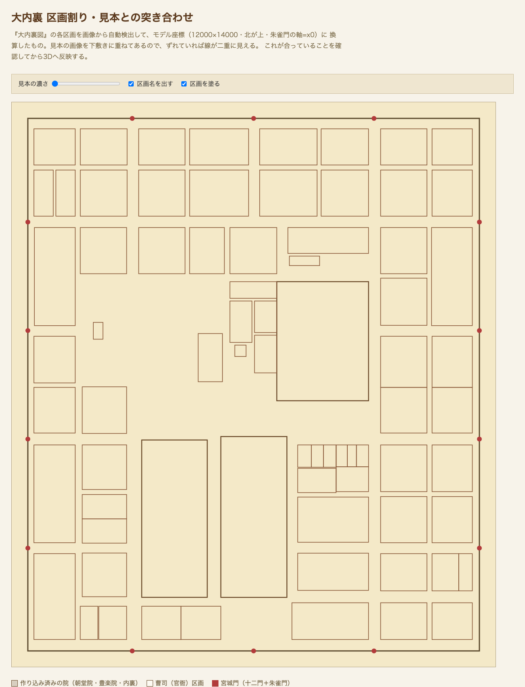

内裏の寸法と外郭 ― 寸法入り大内裏図による再検証
本文掲載図


原資料のスキャン4点は寸法・区画・門名の確認に使用しましたが、書誌と転載権が未確認のため掲載していません。以下に読み取った内容のみを記録します。
参照資料（井内さん提供スキャン3点・2026-08-19チャット添付）
1. 大内裏平面図（門名入り・彩色） … 全区画名と門名。中和院南端と建礼門の壁が一直線であることが読める 2. 大内裏平面図（寸法入り・単位=丈） … 内裏 東西57×南北72、外郭幅73、中和院高さ56、真言院幅20、 縫殿寮64×40 など。スケールバー200m付き。1丈=3.03m 3. 平安宮内裏のイメージ（梶川敏夫氏画・鳥瞰再現図） … 建礼門前の左右に守衛所。蘭林坊などの北の坊が 南北に広い区画であることが分かる 4. 内裏平面図（後宮ピンク色） … 蘭林坊・桂芳坊・華芳坊の並び（玄輝門の西に蘭林坊・東に桂芳坊・東端に華芳坊）、 内郭の全門名（承明門・玄輝門・宣陽門・陰明門・永安門・長楽門・徽安門・安喜門）
確定した寸法
- 内裏 内郭 = 東西57丈（172.7m）× 南北72丈（218.2m）（一般的な学説とも一致）
- 内裏 外郭 = 東西73丈（221m）× 南北約100丈（303m）
- 中和院の南端と建礼門の壁（外郭南垣）は一直線
- 外郭南垣〜内郭南回廊（建礼門〜承明門）の帯 ≈ 7〜8丈
- 玄輝門〜朔平門（北の帯）≈ 20丈。ここに蘭林坊・桂芳坊・華芳坊が塀付きの坊として並ぶ
- 建礼門前の左右に守衛所（再現図より。名称・寸法は推定）
- 真言院 幅20丈
3Dへの反映（2026-08-19実施・実測で検証済み）
| 項目 | 旧 | 新 |
|---|---|---|
| 内郭 東西×南北 | 66.9×84.0丈（17%過大） | 57.0×72.0丈 |
| 建礼門の壁 z | 383（中和院南端-47から430ずれ） | -47（一直線） |
| 北の坊 | 南北5.5丈の建物列 | 南北17.4丈の塀付き坊×3 |
| 守衛所 | なし | 建礼門前 左右一対 |
| 真言院 幅 | 11.4丈 | 20.2丈 |
実装: buildDairiInner の外郭をlocal x685..2615 / z-3878..-1100へ、埋め込みを scaleKitXY(shiftKit(k,185,944),1650,-2299,1.2247,1.091) へ変更（sx=1.2247は大内裏全体のx0.94006込みで57丈になる値）。 縫殿寮・南院は外郭の北進に合わせて南北を詰めた。dairiWalk・ツアーdairi停泊・夜の篝火・hover地名の内裏座標を追随。
未反映（次の候補）
- 中和院の南北56丈化（現状32.9丈。南端は揃えたが北へ伸ばしていない＝采女町・内膳司の再配置に波及）
- 内裏内部の殿舎はスケール追随のみ（後宮の個々の舎の相対位置は図とおおむね整合、微修正は目視後）